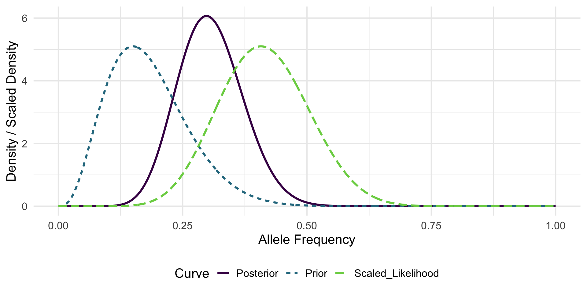
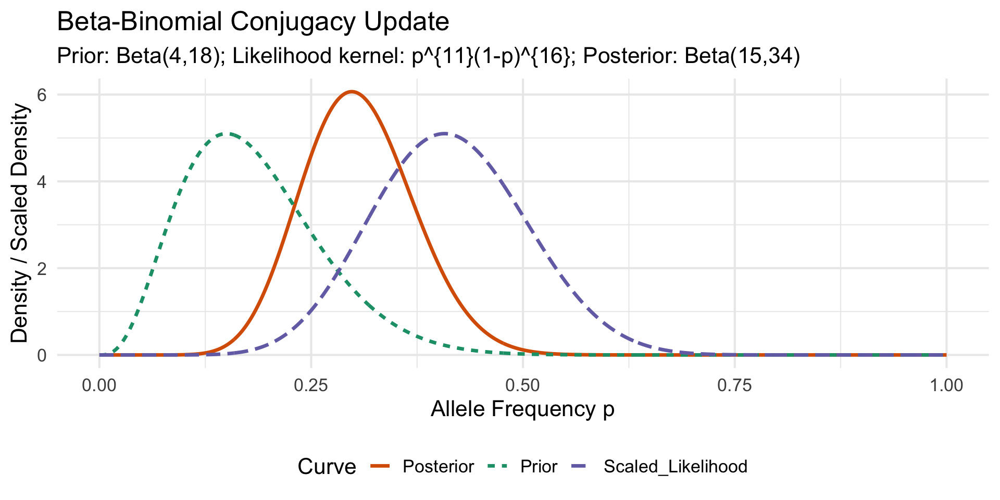
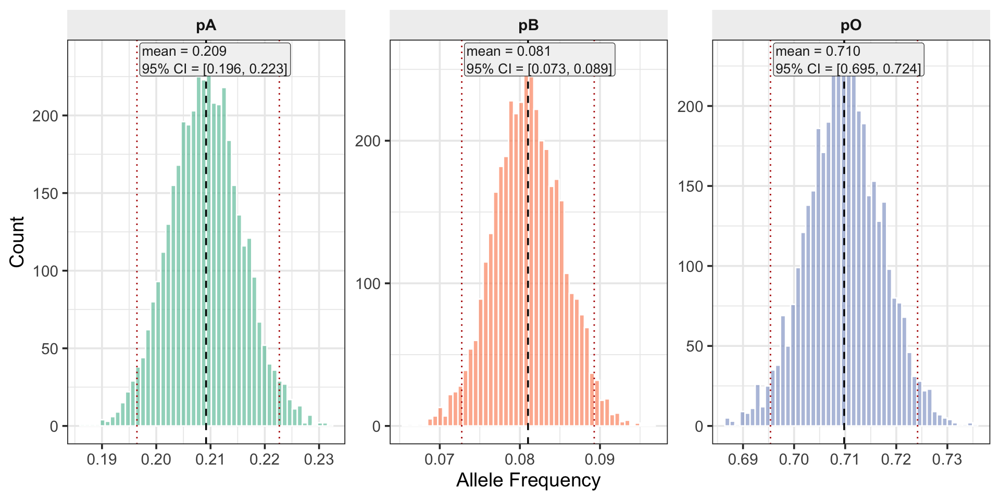
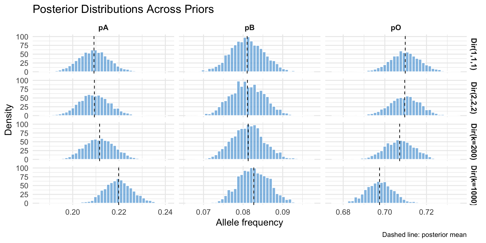
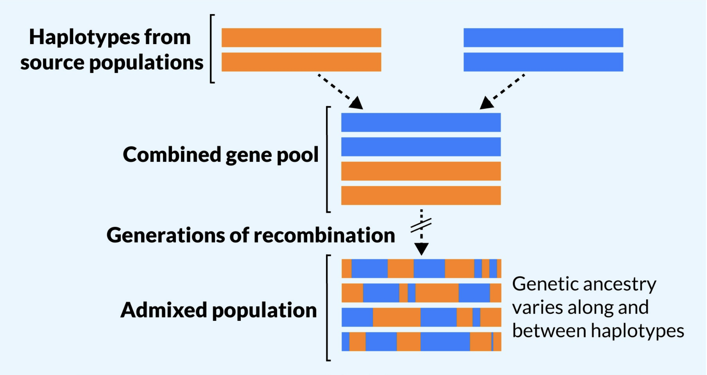
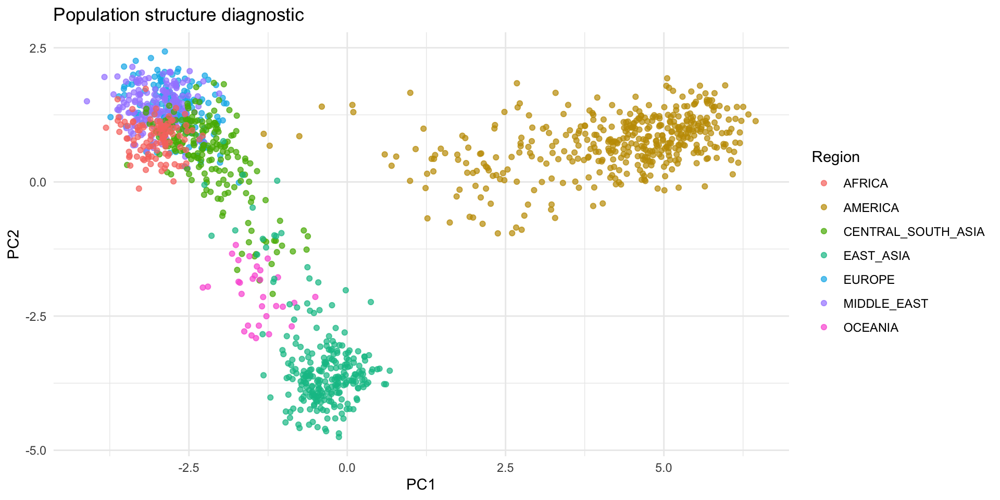
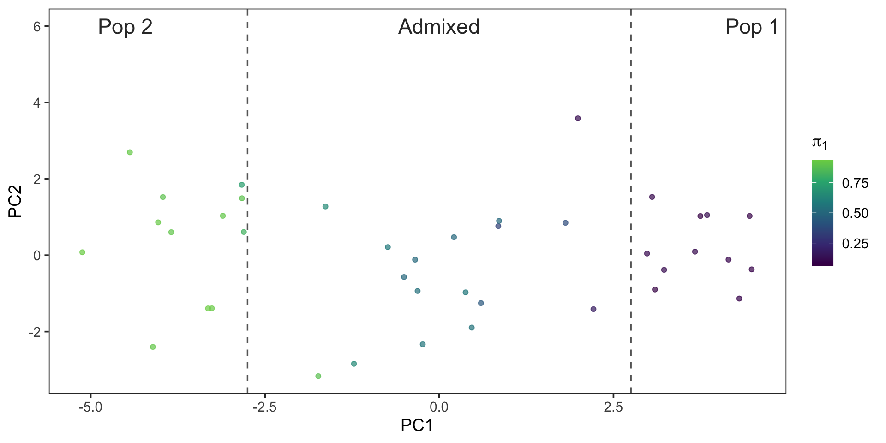
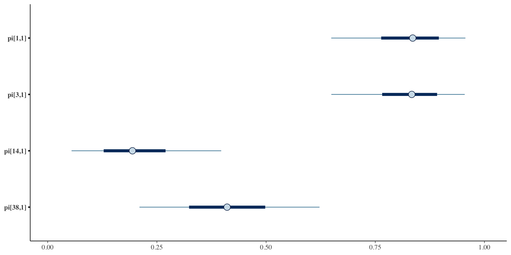

| Concept | Frequentist | Bayesian |
|---|---|---|
| Parameter | Fixed | Random |
| Data | Random | Fixed |
| Estimate | Point estimate | Posterior distribution |
| Confidence Interval | Interval with coverage | Credible interval |
| Hypothesis Test | Reject/Fail to reject | Posterior predictive check |
| P-value | Probability of data under null | Probability of hypothesis given data |
| Likelihood | Function of parameter given data | Function of data given parameter |
Lecture 04: Population Structure and Bayesian Methods in Statistical Genetics
PUBH 8878, Statistical Genetics
Intro to Bayesian Methods
The Bayesian Paradigm
- Let \theta be unknown parameters, y observed data
- While frequentist methods treat \theta as fixed but unknown, Bayesian methods treat \theta as random variables
Sir Thomas Bayes
Bayes’ Theorem
- Uncertainty in \theta is modeled via a prior distribution p(\theta)
- Observed data y are modeled via a likelihood p(y|\theta)
- Bayes’ theorem combines these to yield the posterior distribution p(\theta|y) \propto p(y|\theta)p(\theta)
Frequentist vs Bayesian Terminology
Interpretation of Intervals
Compare statements on intervals
- Frequentist: “Over many repeated samples, 95% of such intervals will contain the true parameter.”
- Bayesian: “Given the observed data and prior, there is a 95% probability that the parameter lies within this interval.”
Bayesian Pros and Cons
Pros
- Intuitive: direct probability statements about parameters
- Flexibility: complex models, hierarchical structures, small-n
- Incorporate prior knowledge or expert opinion
- Full uncertainty quantification via posterior distributions
Cons
- Computationally intensive: MCMC, variational inference
- Sensitivity to prior choice
- Not the status quo in many fields
Further Resources

Conjugacy
- A prior is conjugate to a likelihood if the posterior is in the same family as the prior.
- Example: Beta prior + Binomial likelihood to Beta posterior
Conjugacy Example
Consider the allele-frequency estimation setup introduced in Lecture 1.
- Previous experiment: observed x_{\text{prev}} = 3 successes (allele A) out of n_{\text{prev}} = 20 trials.
- Current data: x = 11 successes out of n = 27 trials.
- Parameter of interest: allele (“success”) frequency p.
Step 1: Prior
From the previous experiment (3 successes out of 20 trials), we can form a Beta prior:
Interpret \alpha and \beta as pseudo-counts of successes and failures, respectively. (Note that \text{Beta}(1,1) is uniform on 0,1.)
\begin{gather*} p \sim \text{Beta}(\alpha, \beta) \\ \alpha = x_{\text{prev}} + 1 = 4 \\ \beta = n_{\text{prev}} - x_{\text{prev}} + 1 = 18. \end{gather*}
Step 2: Likelihood
Current data likelihood (up to proportionality in p): L(p; x,n) \propto p^{x} (1-p)^{n-x} = p^{11}(1-p)^{16}.
Recognize this kernel as
\text{Beta}(x+1, n-x+1)=\text{Beta}(12,17)
Step 3: Posterior (Conjugacy)
Multiply prior and likelihood kernels: p^{\alpha-1}(1-p)^{\beta-1}\times p^{x}(1-p)^{n-x} = p^{(\alpha + x) - 1}(1-p)^{(\beta + n - x) - 1}.
Thus
\begin{align*} p | x \sim \text{Beta}(\alpha + x,\ \beta + n - x) &= \text{Beta}(4+11,\ 18+16) \\ &= \text{Beta}(15,34). \end{align*}
Posterior Summaries
Posterior mean: E[p|x] = \frac{15}{15+34} = 0.306 (shrinks slightly toward prior mean \frac{4}{22}=0.182 relative to MLE \hat p = 11/27 \approx 0.407).
Effective sample size intuition: prior contributes (\alpha+\beta-2)=20 pseudo-trials; data contribute 27 real trials.
Visualization
Non-Conjugate Models
- Conjugacy is convenient but limited to simple models
- Many realistic models (e.g., multinomial/Dirichlet with nonlinear transforms) are non-conjugate
- Bayesian inference in these models typically requires computational methods like MCMC or variational inference
- Richard McElreath has a great youtube video on MCMC
Bayesian Revisit: ABO Allele Frequencies
- Goal: Infer allele frequencies
(p_A, p_B, p_O)given phenotype counts(n_A, n_AB, n_B, n_O). - Frequentist (Lecture 03): EM treats latent genotypes for A and B phenotypes.
- Bayesian: Place a prior on allele frequencies; integrate (average) over uncertainty rather than impute expected counts.
Data & Sufficient Statistics
- From Lecture 03, we have:
- n_A = 725 individuals with A phenotype
- n_{AB} = 72 individuals with AB phenotype
- n_{B} = 258 individuals with B phenotype
- n_{O} = 1073 individuals with O phenotype
- Total sample size: N = 2128 individuals
Model Specification
- Allele frequency vector: \boldsymbol p=(p_A,p_B,p_O), \boldsymbol p\sim\text{Dirichlet}(\boldsymbol\alpha).
- Under HWE, genotype frequencies: p_A^2, 2p_A p_O, p_B^2, 2 p_B p_O, 2 p_A p_B, p_O^2.
- Phenotype probabilities (aggregating ambiguous genotypes):
- P(\text{A}) = p_A^2 + 2 p_A p_O
- P(\text{AB}) = 2 p_A p_B
- P(\text{B}) = p_B^2 + 2 p_B p_O
- P(\text{O}) = p_O^2
- Likelihood: (n_A,n_{AB},n_B,n_O) \sim \text{Multinomial}(N, \boldsymbol q) with \boldsymbol q above.
Prior Families
- Weak Dirichlet(1,1,1) (uniform over allele simplex)
- Mild Dirichlet(2,2,2) (light shrink toward center)
Using Historical Data
- Consider global survey means (p_A = 0.26, p_B = 0.09, p_O = 0.65) (Mourant et al., 1976; Yamamoto et al., 2012).
- Dirichlet prior: \mathbf{\alpha} = k (0.26, 0.09, 0.65)
- Effective sample size idea: acts like observing k allele draws before current data (2N alleles in sample).
- Relative weight vs data (here total alleles = 2N = 4256):
- k = 200 \to prior weight \approx 4.5\% of total information.
- k = 1000 \to prior weight \approx 19.0\% of total information.
Prior Shapes (Marginal Densities)
How to fit these models?
- So we have our data, likelihood, and priors
- We can use MCMC to sample from the posterior distribution of allele frequencies
- There exist many software packages to do this! We will use Stan (Carpenter et al., 2017) via the
cmdstanrR package

Stan Model
Step 1: Phenotype Probabilities
- 1
-
Declare the
functionsblock (optional in Stan, but lets us encapsulate logic) - 2
- Define a helper that maps allele frequencies to phenotype probabilities
- 3
- Extract components (for readability in later expressions)
Stan Model
Step 1: Phenotype Probabilities
- 4
-
Allocate a length-4 vector
q(A, AB, B, O) for phenotype probabilities - 5
- Hardy–Weinberg genotype algebra aggregated into phenotype probabilities
- 6
- Return the vector
Stan Model
Step 2: Data & Transforms
- 1
-
Raw observed counts and prior hyperparameters enter in the
datablock. - 2
- ABO phenotype counts (non-negative integers) per category.
- 3
-
Dirichlet prior parameters supplied from R (allow different priors via
alpha).
Stan Model
Step 2: Data & Transforms
- 4
-
transformed datapre-computes deterministic quantities once - 5
- Total sample size N used for reference or diagnostics
- 6
- Assemble counts into an array to pass to the multinomial
Stan Model
Step 3: Parameters & Derived q
- 1
-
Declare unknown quantities to infer in
parameters - 2
-
simplex[3]enforces positivity and sum-to-one constraints automatically - 3
-
transformed parametersrecomputes per-draw derived values - 4
- Reuse helper to obtain phenotype probabilities from allele frequencies
Stan Model (Step 4: Prior & Likelihood)
- 1
-
The
modelblock contains all sampling statements contributing to log density - 2
-
Dirichlet prior on allele frequencies
p - 3
-
Multinomial likelihood over phenotype counts with probabilities
q.
Stan Model (Step 5: Generated Quantities)
1generated quantities {
2 real log_lik = multinomial_lpmf(y | q);
3 vector[6] geno_freq;
4 real pA = p[1]; real pB = p[2]; real pO = p[3];
5 geno_freq[1] = pA * pA; # AA
geno_freq[2] = 2 * pA * pO; # AO
geno_freq[3] = pB * pB; # BB
geno_freq[4] = 2 * pB * pO; # BO
geno_freq[5] = 2 * pA * pB; # AB
geno_freq[6] = pO * pO; # OO
}- 1
- Post-processing: quantities saved per posterior draw
- 2
- Store log-likelihood for model comparison / LOO / WAIC
- 3
- Allocate genotype frequency vector
- 4
- Local aliases improve clarity when computing genotype frequencies
- 5
- Hardy–Weinberg genotype probabilities
Compile Stan Model
- Stan uses C++ on the backend, so we need to compile the model once before fitting
cmdstan_model()handles compilation and returns a model object for sampling
Fit: Weak Prior (Dirichlet(1,1,1))
- 1
-
Execute the MCMC sampler using the
sample()method on the compiled model object - 2
- Pass data from R to Stan as a named list
- 3
- Specify MCMC sampler settings
Running MCMC with 4 parallel chains...
Chain 1 finished in 0.0 seconds.
Chain 2 finished in 0.0 seconds.
Chain 3 finished in 0.0 seconds.
Chain 4 finished in 0.0 seconds.
All 4 chains finished successfully.
Mean chain execution time: 0.0 seconds.
Total execution time: 0.2 seconds.Model Diagnostics
# A tibble: 18 × 10
variable mean median sd mad q5 q95 rhat ess_bulk
<chr> <dbl> <dbl> <dbl> <dbl> <dbl> <dbl> <dbl> <dbl>
1 lp__ -2.31e+3 -2.31e+3 9.83e-1 7.26e-1 -2.31e+3 -2.31e+3 1.00 1880.
2 p[1] 2.09e-1 2.09e-1 6.60e-3 6.52e-3 1.99e-1 2.20e-1 1.00 4495.
3 p[2] 8.10e-2 8.09e-2 4.23e-3 4.26e-3 7.41e-2 8.81e-2 1.00 2125.
4 p[3] 7.10e-1 7.10e-1 7.27e-3 7.18e-3 6.98e-1 7.22e-1 1.00 3368.
5 q[1] 3.41e-1 3.41e-1 9.80e-3 9.84e-3 3.25e-1 3.57e-1 1.00 4376.
6 q[2] 3.39e-2 3.39e-2 1.92e-3 1.92e-3 3.08e-2 3.70e-2 1.00 2338.
7 q[3] 1.22e-1 1.21e-1 6.27e-3 6.21e-3 1.11e-1 1.32e-1 1.00 2210.
8 q[4] 5.04e-1 5.04e-1 1.03e-2 1.02e-2 4.87e-1 5.21e-1 1.00 3368.
9 log_lik -1.16e+1 -1.13e+1 9.81e-1 7.14e-1 -1.36e+1 -1.07e+1 1.00 1867.
10 geno_freq… 4.38e-2 4.37e-2 2.76e-3 2.73e-3 3.94e-2 4.85e-2 1.00 4495.
11 geno_freq… 2.97e-1 2.97e-1 7.10e-3 7.08e-3 2.85e-1 3.08e-1 1.00 4242.
12 geno_freq… 6.58e-3 6.55e-3 6.87e-4 6.90e-4 5.50e-3 7.76e-3 1.00 2125.
13 geno_freq… 1.15e-1 1.15e-1 5.59e-3 5.53e-3 1.06e-1 1.24e-1 1.00 2225.
14 geno_freq… 3.39e-2 3.39e-2 1.92e-3 1.92e-3 3.08e-2 3.70e-2 1.00 2338.
15 geno_freq… 5.04e-1 5.04e-1 1.03e-2 1.02e-2 4.87e-1 5.21e-1 1.00 3368.
16 pA 2.09e-1 2.09e-1 6.60e-3 6.52e-3 1.99e-1 2.20e-1 1.00 4495.
17 pB 8.10e-2 8.09e-2 4.23e-3 4.26e-3 7.41e-2 8.81e-2 1.00 2125.
18 pO 7.10e-1 7.10e-1 7.27e-3 7.18e-3 6.98e-1 7.22e-1 1.00 3368.
# ℹ 1 more variable: ess_tail <dbl>Posterior Summaries & Intervals (Weak Prior)
post_weak <- fit_weak$draws(variables = c("p")) |> as_draws_df()
weak_summ <- post_weak %>% summarise(
mean_pA = mean(`p[1]`), mean_pB = mean(`p[2]`), mean_pO = mean(`p[3]`),
sd_pA = sd(`p[1]`), sd_pB = sd(`p[2]`), sd_pO = sd(`p[3]`)
)
weak_ci <- post_weak %>% summarise(
pA_low = quantile(`p[1]`, 0.025), pA_high = quantile(`p[1]`, 0.975),
pB_low = quantile(`p[2]`, 0.025), pB_high = quantile(`p[2]`, 0.975),
pO_low = quantile(`p[3]`, 0.025), pO_high = quantile(`p[3]`, 0.975)
)Posterior Histograms (Weak Prior)
EM vs Bayesian Point Estimates
# A tibble: 2 × 5
method pA pB pO loglik
<chr> <dbl> <dbl> <dbl> <dbl>
1 EM 0.209 0.0808 0.710 -2304.
2 Posterior Mean 0.209 0.0810 0.710 NA Consolidated Posterior Comparison
Population Structure
Population Substructure
- Features of a population which result from variation of expected allele frequencies across individuals
- Standard allele counting (\hat{p} = (2n_{AA} + n_{Aa}/2n)) will still be unbiased
- But, not all subjects may have the same probability of being represented in the sample
- Variance of estimate will be effected
Population Stratification
- Individuals in a population can be subdivided into mutually exclusive strata
- Within each strata the allele frequency is the same for all individuals
- Intuitively, we are partitioning a large dataset into multiple smaller datasets
Population Admixture
- When individuals in a population have a mixture of different genetic ancestries due to prior mixing of two or more populations
- Often result of migration
Population Admixture
From Korunes and Goldberg (2021)
Population Inbreeding
- Occurs when there is a preference for mating among relatives in a population or because geographic isolation of subgroups restricts mating choices
- Possibility that an offspring will inherit two copies of the same ancestral allele
- Define F, the inbreeding coefficient, as the probability that a random individual in the population inherits two copies of the same allele from a common ancestor
Admixture as a Confounder
- Consider the problem of estimating the effect of a SNP on a disease phenotype: \beta in P(Y=1) = \text{logit}^{-1}(\alpha + \beta G)
- Recent admixture mixes ancestries within individuals: genotype is a convex combination of source populations
- If phenotype prevalence differs by ancestry, local or global ancestry proportions act like hidden covariates
- Association tests must separate causal signal from ancestry-driven allele frequency differences
Principal Components for Structure
- Construct the standardized genotype matrix Z and compute Z^T Z / M (with M markers)
- Top eigenvectors capture major ancestry gradients
- Use the leading PCs as covariates in association tests or to stratify downstream analyses
Principal Components for Structure
/// GENIND OBJECT /////////
// 1,350 individuals; 678 loci; 8,170 alleles; size: 44.1 Mb
// Basic content
@tab: 1350 x 8170 matrix of allele counts
@loc.n.all: number of alleles per locus (range: 5-35)
@loc.fac: locus factor for the 8170 columns of @tab
@all.names: list of allele names for each locus
@ploidy: ploidy of each individual (range: 2-2)
@type: codom
@call: read.fstat(file = file, missing = missing, quiet = quiet)
// Optional content
@pop: population of each individual (group size range: 3-50)
@other: a list containing: popInfo Principal Components for Structure
hgdp_df <- genind2df(eHGDP, sep = "/")
# Convert to allele count matrix, center columns (replace missing with locus means)
geno_mat <- scaleGen(eHGDP, center = TRUE, scale = FALSE, NA.method = "mean")
pc_fit <- prcomp(geno_mat, center = FALSE, scale. = FALSE)
# Map individuals to geographic regions for coloring
pop_info <- eHGDP@other$popInfo
pop_index <- as.integer(pop(eHGDP))
region <- pop_info$Region[pop_index]
plot_df <- data.frame(PC1 = pc_fit$x[, 1], PC2 = pc_fit$x[, 2], Region = region)
ggplot(plot_df, aes(PC1, PC2, color = Region)) +
geom_point(alpha = 0.7, size = 1.5) +
labs(title = "Population structure diagnostic", x = "PC1", y = "PC2") +
theme_minimal()Principal Components for Structure
STRUCTURE & ADMIXTURE
- Model-based clustering methods for population structure inference
- Assume K latent populations with distinct allele frequencies
- Each individual has ancestry proportions \boldsymbol{\pi}_i across K populations
- Each genotype is drawn from a mixture of population-specific allele frequencies
- Use maximum likelihood (ADMIXTURE) or Bayesian inference (STRUCTURE) to estimate parameters
Assumptions
- Hardy-Weinberg equilibrium within each ancestral population
- Linkage equilibrium between loci within each ancestral population
- Loci are unlinked (or weakly linked)
Example Output

Bayesian Admixture
- Latent populations k = 1,\ldots,K possess allele frequencies \theta_{k\ell} at locus \ell
- Individual ancestry proportions \boldsymbol{\pi}_i \sim \text{Dirichlet}(\boldsymbol{\alpha})
- Genotype y_{i\ell} \sim \text{Binomial}\left(2, \sum_{k} \pi_{ik} \theta_{k\ell}\right) assuming HWE within each ancestral population
- Posterior draws propagate ancestry/allele-frequency uncertainty into association testing, local ancestry, and polygenic prediction
Identifiability & Label Switching
- Problem: Mixture components are exchangeable → posterior multimodality
- Solution: Anchor loci with informative priors break symmetry
- Populations defined by genetic signatures, not arbitrary labels
- Multiple anchors provide robustness against weak signals
Stan Model: Data & Parameters
data {
int<lower=1> N; // individuals
int<lower=1> L; // loci
int<lower=1> K; // ancestral pops
array[N, L] int<lower=0, upper=2> y; // genotypes (0,1,2)
int<lower=0> L_soft;
array[L_soft] int<lower=1, upper=L> soft_idx; // e.g., {2}
array[K] real<lower=0> a_theta; // Beta 'a' for non-anchor loci
array[K] real<lower=0> b_theta; // Beta 'b' for non-anchor loci
int<lower=1, upper=L> l_star; // anchor locus index
real<lower=0> conc_pi; // shared Dirichlet conc. for pi
}Stan Model: Parameters & Transformed Parameters
parameters {
array[N] simplex[K] pi; // ancestry proportions
ordered[K] eta; // ordered logits at anchor locus
matrix<lower=0, upper=1>[K, L-1] theta_rest; // allele freqs for non-anchor loci
}
transformed parameters {
matrix<lower=0, upper=1>[K, L] theta; // full allele-frequency matrix
matrix[N, L] p_mix; // mixed allele frequency
// anchor column (ordered)
for (k in 1:K) theta[k, l_star] = inv_logit(eta[k]);
// fill remaining columns
{
int c = 1;
for (l in 1:L) {
if (l == l_star) continue;
for (k in 1:K) theta[k, l] = theta_rest[k, c];
c += 1;
}
}
// mixture expectations
for (n in 1:N)
for (l in 1:L)
p_mix[n, l] = dot_product(pi[n], col(theta, l));
}Stan Model: Priors & Likelihood
model {
// priors
eta ~ normal(0, 2.5); // weak prior; ordering gives ID
for (k in 1:K)
for (c in 1:(L - 1))
theta_rest[k, c] ~ beta(a_theta[k], b_theta[k]);
for (n in 1:N)
pi[n] ~ dirichlet(rep_vector(conc_pi, K));
for (c in 1:L_soft) {
int l = soft_idx[c];
if (l != l_star) {
// comp 1 LOW, comp 2 HIGH at these loci (gentle)
target += beta_lpdf(theta[1, l] | 2, 8);
target += beta_lpdf(theta[2, l] | 8, 2);
}
}
// likelihood
for (n in 1:N)
for (l in 1:L)
y[n, l] ~ binomial(2, p_mix[n, l]);
}Stan Model: Generated Quantities
Mathematical Framework
Individual-Locus Allele Frequency
For individual i at locus \ell, expected allele frequency: p_{i\ell} = \sum_{k=1}^K \pi_{ik} \theta_{k\ell}
Information Borrowing Across Loci
Key insight: Same \boldsymbol{\pi}_i parameters appear in likelihood for all loci
L(\boldsymbol{\pi}_i, \boldsymbol{\Theta}) = \prod_{\ell=1}^L \text{Binomial}\left(y_{i\ell} \mid 2, \sum_{k=1}^K \pi_{ik} \theta_{k\ell}\right)
Mathematical Framework
Hierarchical Learning
- Anchor loci provide strong identification signal
- Remaining loci contribute cumulative evidence
- Posterior uncertainty propagates through all parameters
Simulating Admixed Genotypes
- 1
- Fixed random seed for consistent results across sessions
- 2
- Normalized gamma variates generate simplex-constrained ancestry proportions
- 3
- Set simulation parameters
Simulating Admixed Genotypes
4# Create very clear population differentiation
theta_true <- matrix(0, nrow = K, ncol = L)
# Multiple anchor loci: very strong differentiation
theta_true[1, 1] <- 0.1 # Pop 1: very low frequency at anchor 1
theta_true[2, 1] <- 0.9 # Pop 2: very high frequency at anchor 1
theta_true[1, 2] <- 0.1 # Pop 1: very low frequency at anchor 2
theta_true[2, 2] <- 0.9 # Pop 2: very high frequency at anchor 2
# Other loci: strong differentiation
theta_true[1, 3:L] <- rbeta(L-2, 2, 8) # Pop 1: much lower overall
theta_true[2, 3:L] <- rbeta(L-2, 8, 2) # Pop 2: much higher overall
5pi_true <- rbind(
rdirichlet(12, c(90, 10)), # pop 1
rdirichlet(12, c(10, 90)), # Very pure pop 2
rdirichlet(16, c(10, 10)) # Admixed individuals
)- 4
- Strong genetic signatures with multiple anchor loci
- 5
- Mix of unadmixed founders and admixed descendants
Simulating Admixed Genotypes
6y <- matrix(0L, nrow = N, ncol = L)
for (n in 1:N) {
for (l in 1:L) {
p_mix <- sum(pi_true[n, ] * theta_true[, l])
y[n, l] <- rbinom(1, size = 2, prob = p_mix)
}
}- 6
- Genotypes drawn from Binomial(2, p_mix) per individual and locus
PCA On Simulated Genotypes
- Center genotypes by 2 \times \hat{p} and scale by \sqrt{2 \cdot \hat{p} \cdot (1 - \hat{p})}
p_hat <- colMeans(y) / 2
sd_hat <- sqrt(pmax(1e-6, 2 * p_hat * (1 - p_hat)))
Z <- scale(y, center = 2 * p_hat, scale = sd_hat)
pc <- prcomp(Z, center = FALSE, scale. = FALSE)
pc_df <- data.frame(PC1 = pc$x[, 1], PC2 = pc$x[, 2], pi1 = pi_true[, 1])
ggplot(pc_df, aes(PC1, PC2, color = pi1)) +
geom_point(alpha = 0.7, size = 1.6) +
scale_color_viridis_c(end = .8) +
labs(color = expression(pi[1]), x = "PC1", y = "PC2") +
geom_vline(xintercept = 2.75, linetype = "dashed", color = "gray40", linewidth = 0.6) +
geom_vline(xintercept = -2.75, linetype = "dashed", color = "gray40", linewidth = 0.6) +
annotate("text", x = 4.5, y = 6, label = "Pop 1", color = "gray20", size = 6) +
annotate("text", x = -4.5, y = 6, label = "Pop 2", color = "gray20", size = 6) +
annotate("text", x = 0, y = 6, label = "Admixed", color = "gray20", size = 6) +
theme_bw(base_size = 14) +
theme(panel.grid = element_blank()) PCA On Simulated Genotypes
Fitting the Model
admix_mod <- cmdstan_model(file.path("stan", "structure_admixture.stan"))
l_star <- 1 # choose your anchor locus (e.g., 1)
admix_data <- list(
N = N, L = L, K = K, y = y,
a_theta = rep(1.5, K), b_theta = rep(1.5, K),
l_star = l_star, L_soft = 1, soft_idx = c(2),
conc_pi = 2.0
)
admix_fit <- admix_mod$sample(
data = admix_data,
chains = 4, parallel_chains = 4,
iter_warmup = 2000, iter_sampling = 2000,
seed = 887804, refresh = 0
)Running MCMC with 4 parallel chains...Chain 2 Informational Message: The current Metropolis proposal is about to be rejected because of the following issue:Chain 2 Exception: binomial_lpmf: Probability parameter is 1, but must be in the interval [0, 1] (in '/var/folders/3f/7lk7ddbn19j4f1rzxtlx3z9w0000gn/T/RtmpX9Wapd/model-d8207aefdca0.stan', line 65, column 6 to column 41)Chain 2 If this warning occurs sporadically, such as for highly constrained variable types like covariance matrices, then the sampler is fine,Chain 2 but if this warning occurs often then your model may be either severely ill-conditioned or misspecified.Chain 2 Chain 4 Informational Message: The current Metropolis proposal is about to be rejected because of the following issue:Chain 4 Exception: binomial_lpmf: Probability parameter is 1, but must be in the interval [0, 1] (in '/var/folders/3f/7lk7ddbn19j4f1rzxtlx3z9w0000gn/T/RtmpX9Wapd/model-d8207aefdca0.stan', line 65, column 6 to column 41)Chain 4 If this warning occurs sporadically, such as for highly constrained variable types like covariance matrices, then the sampler is fine,Chain 4 but if this warning occurs often then your model may be either severely ill-conditioned or misspecified.Chain 4 Chain 2 finished in 8.6 seconds.
Chain 1 finished in 8.7 seconds.
Chain 4 finished in 8.6 seconds.
Chain 3 finished in 9.0 seconds.
All 4 chains finished successfully.
Mean chain execution time: 8.7 seconds.
Total execution time: 9.1 seconds.Stan Output
dm <- admix_fit$draws(variables = c("theta","pi"), format = "draws_df")
lstar <- admix_data$l_star
L <- ncol(y)
non_anchor <- setdiff(1:L, lstar)
# Orientation score per draw: average sign over non-anchor loci
sign_per_draw <- rowMeans(sapply(non_anchor, function(l)
sign(dm[[sprintf("theta[2,%d]", l)]] - dm[[sprintf("theta[1,%d]", l)]])))
# Reference orientation: the majority sign across all draws
ref_sign <- ifelse(mean(sign_per_draw) >= 0, -1, 1)
# Decide which DRAWS to flip (not just which chains)
flip_draw <- sign_per_draw * ref_sign < 0
# Helper: swap theta rows and pi columns for those draws
swap_block <- function(df, pat1, pat2, idx){
i1 <- grep(pat1, names(df)); i2 <- grep(pat2, names(df))
tmp <- df[idx, i1, drop=FALSE]
df[idx, i1] <- df[idx, i2, drop=FALSE]
df[idx, i2] <- tmp
df
}
# Swap theta rows
dm <- swap_block(dm, "^theta\\[1,", "^theta\\[2,", flip_draw)
# Swap pi columns
dm <- swap_block(dm, "^pi\\[[0-9]+,1\\]$", "^pi\\[[0-9]+,2\\]$", flip_draw)Aligned Posteriors
Credible Intervals
Summary & Next Steps
- Population structure influences genetic analyses
- Bayesian framing exposes prior choices, enables posterior uncertainty on structure (ABO example, admixture Stan model)
- Bayesian modeling as attempting to capture the data-generating process
Reference
Carpenter,B. et al. (2017) Stan: A probabilistic programming language. Journal of Statistical Software, 76, 1–32.
Gelman,A. et al. (2013) Bayesian data analysis 3rd ed. Chapman; Hall/CRC, Boca Raton, FL.
Korunes,K.L. and Goldberg,A. (2021) Human genetic admixture. PLOS Genetics, 17, e1009374.
McElreath,R. (2020) Statistical rethinking: A bayesian course with examples in r and stan 2nd ed. Chapman; Hall/CRC, Boca Raton, FL.
Mourant,A.E. et al. (1976) The distribution of the human blood groups and other polymorphisms 2nd ed. Oxford University Press, London.
Yamamoto,F. et al. (2012) ABO research in the modern era of genomics. Transfusion Medicine Reviews, 26, 103–118.